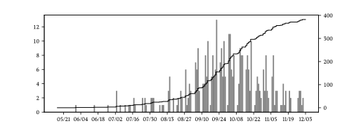

Reflections on my tenure track jobs search
This is a collection of thoughts complied throughout my tenure track job search during the Fall 2023 application cycle.
Statements
Here are sample copies of my statements:
- Research Statement
- I opted to write a forward looking research statement, and did not spend much time discussing my past work except to highlight how it fits into my current research program.
From looking at examples of other people’s research statements, it also seemed very common to write a research statement essentially summarizing your thesis.
I submitted exactly the same research statement to every school.
- Teaching Statement
- I found the teaching statement relatively straightforward and discussed my teaching style and my mentorship of undergraduates.
For each school I also included a paragraph or two about the classes I would be interested in teaching and sometimes student programs I might be interested in helping advise.
- Diversity Statement
- I had a general template and I again included a discussion about mentorship of undergrad students.
However, for some schools, I wrote a statement almost from scratch, depending on what they asked for or if they had particular programs I was interested in.
- Cover Letter
- I customized this for each school, and this was perhaps the most time-consuming part of each application. For the several schools I was most excited about, I spent up to 3-4 hours very carefully writing the cover letter. This involved a lot of research into the school/department, their ambitions, the communities they serve, etc.
In general, I spent about an half an hour or an hour.
- CV
- This is my CV at the time of applying. I updated my CV throughout the process as new papers were posted or accepted.
Deciding when and where to apply
I like research and teaching, so I was most interested in working at an undergrad-focused research institution but open to other types of schools (e.g. research-focused R1s and some SLACs).
My main criteria was location; I really wanted to stay in NYC or go to Shanghai, and I did not seriously consider anywhere outside of the East Coast or where having a car seemed necessary.
I was fortunate to have a 3 year postdoc contract, so I did not need to apply this year.
I went back and forth about applying, and in the end the main factors in my decision to apply were:
- I didn’t think my application would be much stronger next year because I didn’t have any major results close to being posted,
- I thought applying in more than one cycle would increase the number of desirable positions I could apply to, and
- I was stressed about the uncertainty of not knowing what was next and wanted to get things over with.
- Finally, I figured I could always try to defer any offers one year and if I didn’t get a position it would give me useful data about my chances the next cycle and whether I should start preparing for finding an industry job.
In the end I applied to 6 R1 universities and 3 liberal arts colleges.
My profile: strengths and weaknesses
It’s always hard to evaluate your changes at success in job searches; when applying for undergrad I overestimated my profile and when applying to grad school and postdocs I slightly underestimated my profile.
Strengths:
- My letters are strong (I think)
- For my area, I had a high publication rate in top journals
- My research is pretty interdisciplinary (especially between numerical analysis, TCS, and computational physics)
- I have successfully mentored a number of undergraduate students on research projects and independent studies
- I have a lot of teaching experience commensurate to my rank
- I had a strong diversity statement and demonstrated commitment to such issues
Weaknesses:
- At the time of applying, I did not have a lot of citations, and a large number of the citations I did have are self-citations.
- My research is focused on Krylov subspace methods, which is a relatively niche topic and not very “hot” compared to some other topics. I have tried to emphasize randomized NLA broadly to counteract this.
Timeline
Applications
- May-August: I would check mathjobs every several days, sort by new postings, and mark any that I was potentially interested in.
As you can see in the following plots (data scraped from Mathjobs), the postings really start picking up around September and then tail off in November.

- August 30: I had a very nice visit to NYU Shanghai, and decided I would apply this cycle and begin preparing materials
- I’d already been working on a NSF grant, so I had a lot of exposition ready to go
- Early September: I asked for letters and prepared a summary with an outline of my strategy as well as a one or two sentence summary of all of my papers for my letter writers.
- I also bribed Daniel Kressner into writing a letter by sending him a cuckoo clock.
- October/November: I submitted applications. Most of the schools say when they will start reviewing applications, which tended to be somewhere between mid-late October and December.
Responses/Interviews
- I got one on-campus interview at a good R1 and online interviews at all of the liberal arts colleges I applied to.
Reflections
In retrospect, it was a really good idea to apply.
While finding a tenure track job has been a bit of an existential stressor for the last 10 years, I found the process waaaayyyy less stressful knowing I had another year on my contract.
I think the most valuable thing was just getting some data on how competitive my application was.